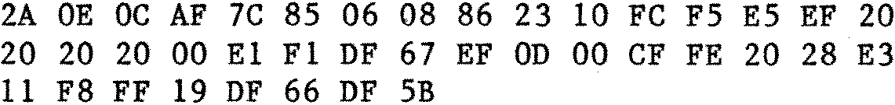

80-Bus News |
January–March 1982 · Volume 1 · Issue 1 |
| Page 13 of 55 |
|---|
Scenario: a Nascom user (not you, though, because you only use your Nascom for serious purposes, of course) has just typed in the whole 4K of Space Invaders, only to find that it won’t run. It must be a typing error. Now, if he had had T2, T4, or even Nas-Sys 1, the whole thing could have been typed in using the L command, and lines with errors in them would have been rejected by the monitor. So, for Nas-Sys 3, here is a fairly minimal program to generate checksums from a program in memory. Comparing these with the listing will allow the easy discovery of typing errors.

To use it, you would just type the Hex code into an unused bit of RAM, and execute it with the following instruction: Exxxx yyyyNL, where xxxx is the address of its first byte, and yyyy is the address of the first byte of the program you wish to check. The checksum for the first eight bytes will be printed. Press the space bar to produce each subsequent one. Press any other key to exit from the program. When you do this, the address of the start of the line just checked is printed.
I was originally going to put a listing of the program in, but it would have taken up a lot of space, besides which, programs to do this are in all the glossies [Computing Today, anyway] so the Nas-Sys 3 users will all have written their own by now.
Bits and P.C.’s have kindly told me how to change their BASIC programmers’ toolkit so that it will work with Nas-Sys 3. All you have to do is change the byte at B185 from 08 to 0C, and they say all will once again be sweetness and light. I have not tried it, but I bet they have! Just goes to show, if you write and ask your friendly dealer a question, they will let you have all sorts of valuable information. I suppose we had best not overdo it, or they will not have enough time left to sell Nascoms in…
I have edited out an incredible [but completely true] story, which was here, about a different Nascom dealer who lied to me on the phone, since it could have been a mistake on their part.
While you watched the soothing picture of a man making a jug on a 78 rpm record player, I got me a Nascom 2 with a disk drive and CP/M. The latter is a lovely thing to have, with some reservations about the standard CP/M issue assembler and editor provided: the assembler is only capable of 8080 code, using weird mnemonics [Intel], and the editor, whilst being powerful in many ways, seems to think a teletype is the only form of input and output in use. By this I mean that you can’t move the cursor up the screen to some other line and work there, or step back to the middle of a line and amend it. But…
| Page 13 of 55 |
|---|